开头一句定方向 — 先说要解决什么The main thing is to make it easy to do the right thing.
给三个动作 — 用祈使句，配顺序词First, keep the shoes by the door. Then put the phone in another room. After that, set a fixed time.
最后一句提醒 — 最容易失败的地方The part people get wrong is starting too big — two weeks of daily gym visits, then nothing.
把「我认为」换成「你做」。
中国学生答这课时的第一反应是 I think the most important thing is…，听起来像在发表观点。英语的 how-to 说明期待的是动作：
Keep the shoes by the door.
一个动词开头的句子，比五句「我觉得」更像说明。
02说明文的四件套：祈使句、顺序词、条件、警告
这一课的所有答案都由这四类句子拼成。认全了，任何一道题都能现场组装。
A · 四种句子，按顺序用
类型
作用
例句
祈使句
给动作。没有主语，动词开头
Keep the shoes by the door. / Don't argue about it.
顺序词
把动作串起来，让人知道先后
First… Then… After that… Finally…
条件句
说明「什么时候适用」
If you're doing this for the first time, start with…
警告句
指出最常见的失败原因
The mistake people make is…
B · 顺序词按正式程度排
最口语
first… then… and then… last…
中性
first of all… after that… finally…
稍正式
to begin with… the next step is… once you've done that…
最简洁
one… two… three…（口语里直接数，非常自然）
课本例题用了 I must…，但你不该照抄。
例题问的是 how to achieve your dreams —— 主语是你自己，所以用 I must believe in myself。
其余 20 题都是教别人，要用 you should 或祈使句。
说 I must drive safely 回答第 1 题就跑题了。
C · 三种「教别人」的说法，按语气排
说法
语气
适用
Keep your distance.
直接、干脆
步骤类、技巧类（第 1、6、8 题）
You should keep your distance.
建议
通用，最安全
It helps if you keep your distance.
委婉、留余地
答案没有标准、别人可能有不同做法时（第 3、5、12 题）
第 3、5、12 题要小心语气。
这三题是「怎么找到另一半」「怎么让孩子开心」「怎么避免变成妻管严」。前者涉及别人的选择，后两者涉及家庭关系，用绝对语气会给人生硬的感觉。
统一用 It helps if… 开头，例如：
It helps if you stop treating it as a search.
—— 建议而非命令，正是这类话题需要的分寸。
I'd question the label first — a marriage where one person decides everything isn't a good one for either of them. What actually helps is deciding things by area rather than by person: whoever understands that part better leads on it.
03课本例题：用第一人称讲决心
例题问 Explain how to achieve your dreams.。这段短，但结构完整：一个前提（相信自己）→ 一个要停止的行为（拖延）→ 一个要持续的行为（不断尝试）→ 一句总结。注意它为什么用 I must —— 因为问的是你自己的梦想。
Example
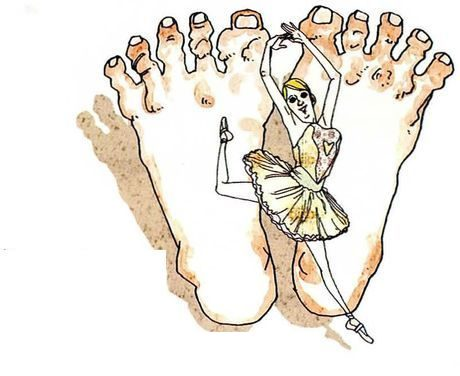
Explain how to achieve your dreams. /prəˈkræstɪneɪt/
What you seeA tiny ballet dancer in a tutu, standing on one leg inside the arch of an enormous bare foot. Small person, enormous scale.
What it means说说怎么实现你的梦想。注意 your —— 是自己的梦想，所以可以用第一人称。
Say it like this"First of all, I have to believe in myself and ignore the people who try to discourage me. I have to stop procrastinating and keep at it. I won't fail as long as I keep trying until something works. I think that's the only way anyone's dreams actually come true."
这段里三个可以直接抄走的表达：
① stop procrastinating —— 课本脚注词，procrastinate 是「习惯性拖延」，比 delay 精准；
② keep at it —— 「坚持下去」，比 keep trying 更地道；
③ dreams come true —— 固定搭配，come true 不用被动（不是 be come true）。
这一课最需要警惕的：把「怎么做到」答成「为什么重要」。
问 how to stay healthy，答「健康很重要，因为……」就是答错了。
检验方法：数一数你的回答里有几个动词。全是形容词和名词（important, necessary, good for you）就没有步骤；有三个以上动作（sleep, walk, cook）才是说明。
04二十个问题：怎么讲出步骤
每张卡三段：What you see 照着图描述，What it means 说明这题该用什么语气，Say it like this 给三档答案：① 一句核心原则 / ② 三个具体步骤 / ③ 再加一句「最容易失败的地方」。第三档请换成你自己的经验。
01
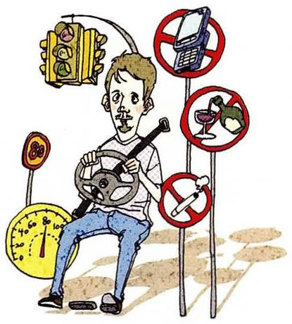
Explain how to drive safely.
What you seeA man sitting on a small scooter, surrounded by a traffic light, a roundabout sign, a no-entry circle and other road signs stacked around him like a hedge.
What it means说说怎么安全驾驶。技巧类题目，用祈使句最自然。
Say it like this①Assume nobody else can see you. ②First, leave more space than you think you need. Then check the mirror before you brake, not after. And put the phone somewhere you can't reach it. ③The single most useful habit is to assume nobody has seen you — not because other drivers are bad, but because you can't know what they're looking at. So leave a gap, look twice at junctions, and treat every green light as if someone might run it. The mistake people make is thinking that being right protects them; in a crash, it doesn't matter whose fault it was.
02
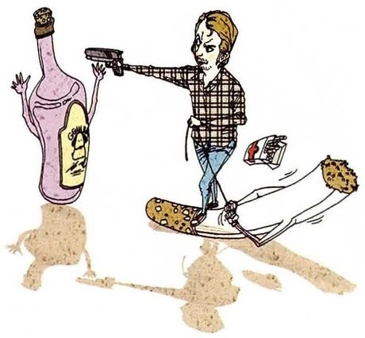
Explain how to stop drinking and smoking.
What you seeA man tipping a bottle to pour it out, holding a glass to one side, while a lit cigarette lies smoking on the floor next to his boot. Getting rid of both.
What it means说说怎么戒烟戒酒。这题容易答成「要有毅力」，那等于没说。
Say it like this①Change the situation, not the willpower. ②First, don't keep any in the house — you're not fighting temptation you can't reach. Then tell people, so it's harder to quietly give up. And replace it with something: a walk, tea, anything that fills the same twenty minutes. ③The advice I'd actually give is not to rely on deciding, because deciding is cheap and you'll do it forty times. Change what's around you instead: don't buy it, don't go to the places where it's automatic, and don't be alone at the time of day you usually start. What people get wrong is treating it as one big decision when it's really a hundred small situations — and the situations are much easier to change than the desire.
03
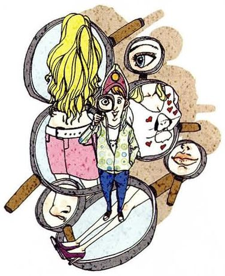
Explain how to find Mr. (or Miss) Right.
What you seeA woman standing with a magnifying glass in one hand, looking into a mirror surrounded by a cluster of other mirrors — searching and inspecting at the same time.
What it means说说怎么找到对的人。课本脚注：Mr. Right = 理想的伴侣。这题涉及别人的选择，语气要软。
Say it like this①It helps if you stop treating it as a search. ②It helps to be somewhere you'd be anyway, doing something you actually care about. That way at least you meet people who share something real. And it helps to be honest early — it saves everyone a year. ③I'd give two pieces of advice and admit they're not very actionable. One: be in rooms where you'd be happy alone, because that's where you're most like yourself. Two: judge how someone behaves when they're tired or wrong, not when they're trying. And the thing people get wrong is looking for someone who fits a list — the list is usually a description of the last person, with the annoyances moved to the end of the list.
04
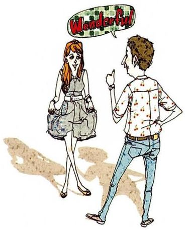
Explain how to make your spouse happy.
What you seeA man gesturing with one hand as he talks, while a woman in a light dress walks past him, not stopping. He's explaining; she has somewhere to be.
What it means说说怎么让伴侣开心。课本脚注：spouse = 配偶（正式用词，含男女）。预设有伴侣。
Say it like this①Notice the small things before they're mentioned. ②It helps to pay attention to the ordinary, not the special occasions. Remember the thing they mentioned in passing, and do your share without being asked. And don't save up complaints until there are nine of them. ③I'm not married, so this is borrowed advice. But the pattern I've seen in the couples who seem fine is that they don't keep score. The unhappy ones can tell you exactly who did the dishes last Tuesday. So: do more than your half without mentioning it, and when something bothers you, say it early while it's still small enough to be a sentence instead of an argument.
05
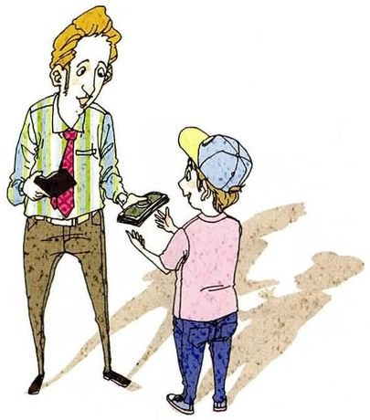
Explain how to make your children happy.
What you seeAn adult leaning down slightly to hand something to a small child wearing a backwards cap and a pink shirt. A gift, given at eye level.
What it means说说怎么让孩子开心。这题不要答成「买东西给他们」—— 太浅。
Say it like this①Give them your attention, not your money. ②Play with them without a phone in your hand. Let them be good at something you're not good at. And don't make everything a lesson — some things are just for fun. ③What I remember from being a child is not the presents, it's that an adult took my question seriously. So I'd say: answer the question as if it mattered, and let them finish the sentence even when you know where it's going. The thing adults get wrong is correcting the answer instead of enjoying the attempt. I don't have children, so this is all theory and a memory.
06
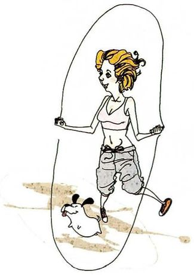
Explain how to stay healthy.
What you seeA woman in a crop top and shorts jumping rope, mid-swing, with a small dog sitting off to one side. Exercise as routine.
What it means说说怎么保持健康。和第 7 课那个「the best way to stay healthy」的不同之处是：这题要步骤，不是主张。
Say it like this①Make it boring and repeatable. ②Sleep at roughly the same time. Move for twenty minutes in a way you don't hate. And learn to cook four things well enough that you'd choose them over takeaway. ③The advice I'd stress is that whatever you pick has to survive a bad week, so pick the smallest version. Twenty minutes beats a plan for an hour you'll abandon. The mistake people make is going all-in in January: they buy the equipment, do it daily for eleven days, and then never think about it again. What works is unimpressive and continuous.
07
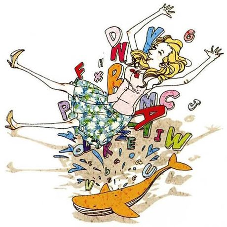
Explain how to improve your English.
What you seeA woman sitting on a chaotic pile of books, letters and papers, both arms up in the air as if overwhelmed by it. Language learning as an avalanche.
What it means说说怎么提高英语。这题是你的主场—— 你有真实经验，别给套话。
Say it like this①Use it for something you'd do anyway. ②Read what you already read, just in English. Talk to yourself out loud while you cook. And get into situations where you can't fall back on Chinese — an actual conversation, once a week. ③I'd say the thing that changed it for me was stopping studying and starting using. I read my field's papers in English because I had to, and my vocabulary grew without a single word list. But reading only fixes half the problem — I could read a paper and fail to order lunch. So the part that actually hurts is speaking, and there's no way to make that comfortable. The mistake people make is spending years on the part that already feels productive.
08
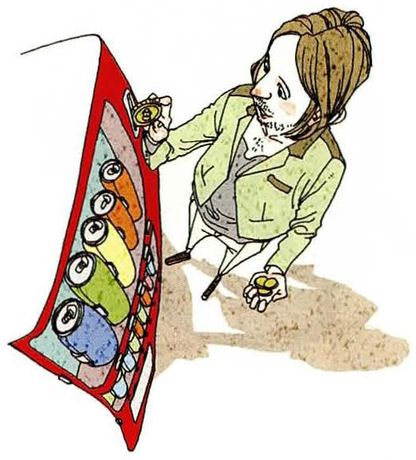
Explain how to use a vending machine.
What you seeA person kneeling down in front of a vending machine with its front panel swung open, rows of drinks visible inside. Getting at the mechanism rather than the slot.
What it means说说怎么用自动售货机。课本脚注：vending machine = 投币出售香烟、糖果、饮料等的机器。这题就是纯步骤，最能练祈使句。
Say it like this①Pick first, pay second. ②Choose the item and note the number. Put in coins or notes — most take small notes now. Then press the number and take the change from the slot underneath. ③Choose the row and column, check the price on the label rather than the picture, then pay. Two practical things: press the button firmly, because a half press sometimes does nothing, and check the change slot before you walk away — a surprising number of machines return it a second late. The mistake everybody makes is paying before deciding, then buying something they didn't want because the money's already in.
09
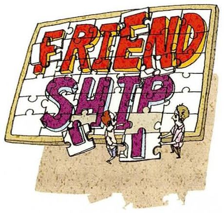
Explain how to avoid letting a friendship sour.
What you seeA wooden jigsaw with the word FRIENDSHIP cut into it, and two small figures standing among the pieces. Something that has to be assembled and can come apart.
What it means说说怎么避免友谊变味。课本脚注：sour = 变得不愉快、不友好。
Say it like this①Say the small thing before it becomes the reason you stopped calling. ②Don't let a complaint sit for months. Keep doing something together that isn't just talking about the past. And be genuinely glad when they do well, which is harder than it sounds. ③What I've noticed is that friendships don't break over a fight — they fade because one person got tired of being the one who texts first. So the practical advice is: send the message, and don't keep count of whose turn it is. And if something did bother you, say it within a week. After a month it's not worth saying, but it's still there, quietly making you less keen to reply.
10
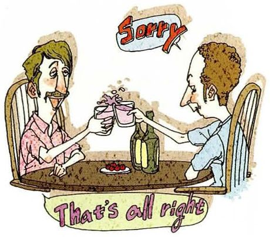
Explain how to make up with an estranged friend.
What you seeTwo men sitting across a table with a bottle between them, one raising his glass and saying Sorry, the other replying That's all right.
What it means说说怎么和疏远的朋友和好。课本脚注：make up = 和好；estranged = 因争执而不再联系的。
Say it like this①Contact them before you've worked out what to say. ②Send one short message that doesn't demand anything. Admit your part without explaining theirs. Then suggest something concrete — a coffee, not "we should catch up". ③The hard part is that the longer it's been, the more you feel you need a good reason to reach out. So don't wait for one: "I saw something that reminded me of you" is enough. In the conversation, take your share of the blame without requiring them to take theirs — the moment it becomes a negotiation about who was more wrong, you're both back where you started.
11
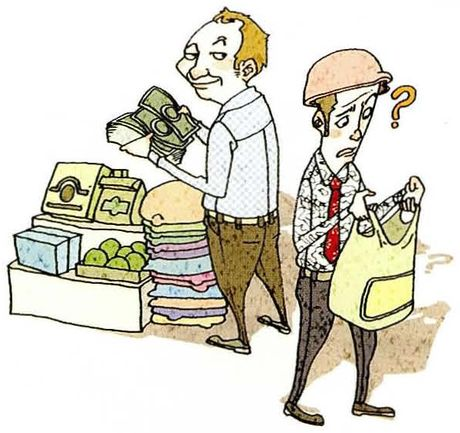
Explain how to avoid getting ripped off when you buy goods.
What you seeTwo men at a market stall stacked with boxes, one holding a bag and looking uncertain, the other gesturing at the goods. A negotiation in progress.
What it means说说怎么避免买东西挨宰。课本脚注：ripped off = 被多收钱。
Say it like this①Know the price before you ask. ②Check the real price on your phone first. Buy where prices are written down rather than quoted. And be willing to walk away — that's the only leverage you have. ③The most useful habit is to decide what you'll pay before you get there, not in the shop. Once you're standing in front of it, the seller has the advantage and you're negotiating with your own wanting. Two things I'd add: written prices are worth more than a friendly discount, and if someone won't give you a receipt, that tells you the price was invented. The mistake is treating a low offer as a win — sometimes it's just a worse product.
12
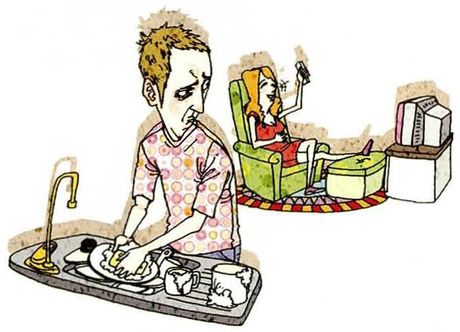
Explain how to avoid becoming a henpecked husband.
What you seeA man in an apron at the sink with his sleeves up, scrubbing a pan, while a woman sits comfortably in a chair behind him with her feet up.
What it means说说怎么避免变成「妻管严」。课本脚注：henpecked = 被妻子支配或烦扰的。这个说法本身带有性别刻板印象，回答时最好点出来。
Say it like this①I'd question the label before answering the question. ②A marriage where one person decides everything isn't good for either of them, so the goal isn't to avoid being dominated — it's to have two people who both have a say. ③I'd push back on the word, actually. "Henpecked" describes a man doing housework and being told things, which is just being part of a household. What I'd avoid is the opposite arrangement too: one person making the decisions and the other quietly resenting it. The practical version is to split by area rather than by person — whoever understands the money better handles the money, whoever's better at plans makes the plans. Then nobody's the boss and nobody's henpecked.
13
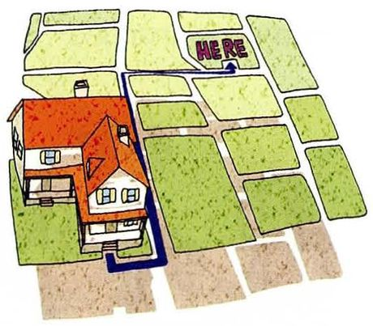
Explain how to get from your home to here.
What you seeA bird's-eye view of a neighbourhood — houses with red roofs, a road, green fields — with a thick blue line drawn through it like a route.
What it means说说怎么从你家到这里。这题纯考方位和路线，是最具体、最好答的一题。
Say it like this①Take the number 3 bus and get off at the second stop after the river. ②Leave by the east gate, walk along the main road for about ten minutes, then turn left at the bank. The building is behind the car park. ③From my flat, take the metro line 2 for four stops, exit at Exit B, and walk about eight minutes along the road with the trees. It's the grey building next to a small supermarket — there's a blue sign you can see from the corner. If you get to the post office, you've gone one too far. It takes about half an hour in total, and the walk is the pleasant part.
14
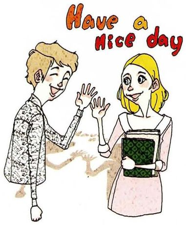
Explain how to make someone smile at you.
What you seeA man with a bag waving at a woman, and a speech bubble reading Have a nice day between them. She's smiling back.
What it means说说怎么让别人对你微笑。这题听起来轻，其实考的是「怎么给出一句自然的小善意」。
Say it like this①Say something small and specific, not a compliment about how they look. ②Smile first, which feels awkward for about a second. Notice something small and mention it — the weather, their dog, the queue. And don't hold eye contact waiting for a reaction. ③The reliable version is giving something without asking for anything back: hold a door, say "have a good evening" to a cashier, comment on the dog rather than the person. Compliments about appearance make people calculate, and you can see them doing it. What actually makes someone smile is being noticed as a person rather than assessed — and the easiest way to do that is to be slightly specific, like "that's the third time that bag has been in the way, isn't it?"
15
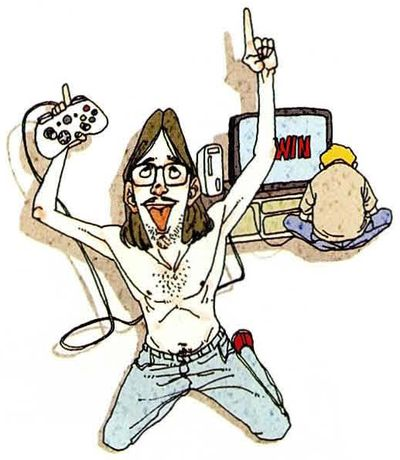
Explain how to win at some video game.
What you seeSomeone kneeling on the floor with a game controller in one hand, the other arm up in triumph, a screen glowing behind them. Victory posture.
What it means说说怎么赢某个电子游戏。这题具体版本更好答 —— 直接挑一个你玩过的。
Say it like this①Learn one thing properly before you try to learn everything. ②Pick a character or a strategy and stay with it for twenty games. Watch someone better play it and copy one habit. And lose on purpose a few times to see what happens. ③Take a specific one — in a fighting game, the thing that separates levels isn't combos, it's knowing what your opponent can do from where they're standing. So my advice is: spend an evening reading about the character you keep losing to, and you'll beat three people the next day. The mistake beginners make is practising the flashy thing, because it's fun and it feels like progress.
16
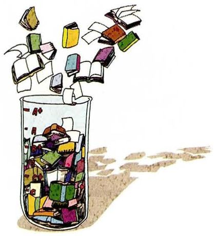
Explain how to get better grades.
What you seeA clear glass jar packed with colourful folded slips of paper, with more of them falling into it from above. Notes going in, one at a time.
What it means说说怎么提高成绩。这题你有真实经验 —— 直接从「什么方法真的有效」讲。
Say it like this①Test yourself instead of re-reading. ②Find out what the exam actually rewards, and check that against what you've been studying. Do past papers under time. Then go back to whatever you got wrong, which is the uncomfortable part. ③The single change that made a difference for me was closing the book and writing down what I remembered, then checking. It feels terrible because you discover you know less than you thought, which is exactly why it works. Re-reading feels productive and teaches you almost nothing. And the second thing: find out what the marker wants. I once lost marks for a whole section because I'd answered the interesting question rather than the one that was asked.
17
Explain how to get rich.
What you seeA man in a tricorn hat and a blue suit sitting on top of an open treasure chest overflowing with banknotes, one finger raised as if making a point.
What it means说说怎么致富。这题容易答成鸡汤（「努力工作」），好的回答会承认运气和结构。
Say it like this①Spend less than you earn for a long time, and be honest that it's mostly not in your control. ②Save a fixed share before you spend anything, avoid debt that compounds against you, and get into something where your income isn't strictly your hours. Beyond that, a lot of it is being in the right industry at the right time. ③I'd separate two things that get muddled. There's a reliable method — spend less than you earn, invest the difference, wait twenty years — which makes you comfortable but not rich. And there's the other route, which is equity in something that grows, and that's mostly luck plus being early. Anyone who tells you it's pure discipline is selling something. The most honest advice I can give is that "rich" is a moving target, and the number that would feel like enough has risen every time I've earned more.
18
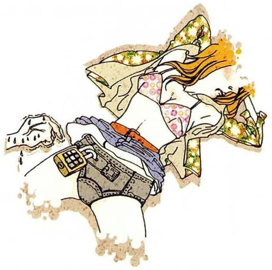
Explain how to avoid a mugger or rapist.
What you seeA woman caught mid-stride running, coat and scarf flying, a phone clutched in one hand. Moving fast, looking back.
What it means说说怎么避免遭遇抢劫或性侵。课本脚注：mugger = 在公共场所袭击并抢劫的人。这是全课最严肃的一题，不要用玩笑带过。
Say it like this①Reduce the situations, and accept that the responsibility isn't yours. ②Practical things: keep the phone out of sight, walk on lit streets, and tell someone where you're going. But I'd also say clearly that if something happens, it isn't because the victim did it wrong. ③I'd give the practical advice and then add the important part, because the two usually get separated. Practically: don't walk with headphones in at night, keep your bag closed and your phone away, and know where you'd go for help on your usual route. But the framing of "how to avoid it" worries me slightly, because it turns a crime into a personal failing. The people who need to change behaviour are the ones committing it. I'd rather say: take the precautions, and don't let anyone tell you afterwards that you should have taken more.
19
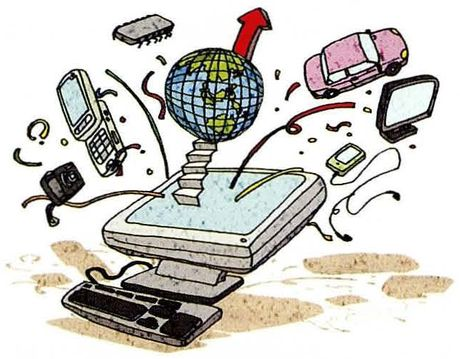
Explain how to avoid getting too busy in life.
What you seeA laptop sitting open with a small globe, a toy car, a phone, envelopes and papers all suspended in the air around it. Everything demanding attention at once.
What it means说说怎么不让生活太忙。这题最容易被答成感慨，要有具体做法。
Say it like this①Say no before the calendar fills, not after. ②Leave one evening a week empty on purpose. Decide what you're not going to do. And check whether the thing you're agreeing to has a deadline or just a feeling of urgency. ③What I've learned is that busyness isn't about the number of things — it's about how many are unfinished in your head at once. So the practical move is to write them down outside your head, and then cut one. I'd also say that the invitation you accept "because it's an opportunity" is usually the one that removes the evening you needed. What people get wrong is thinking they'll be less busy next month. Next month has the things you just agreed to.
20
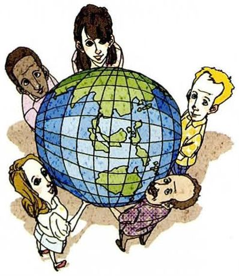
Explain how to achieve world peace.
What you seePeople of different ages and backgrounds standing in a ring around a large globe, faces from several continents, all linked to each other.
What it means说说怎么实现世界和平。这是全课最不可能答出答案的一题 —— 老师想看的不是方案，是你怎么处理一个不可能的问题。
Say it like this①Honestly, I don't think anyone has a method for this. ②I'd start smaller than the question: people who've met someone from the other side are much harder to convince that they're monsters. So anything that puts ordinary people in the same room is doing the work, slowly. ③I'd answer honestly and say that a "how to" for world peace is a category error — it's not a task, it's a condition, and the conditions that produce war are structural. What I think actually helps is unglamorous: trade, students studying abroad, ordinary contact between people who'd otherwise only know each other as a news item. That's slow and it doesn't photograph. The thing I'd avoid is the assumption that peace needs everyone to agree — historically it needs a few people to keep talking when agreeing has stopped.
Giving instructions, apparently — not following them. Of everything on this list the honest answer is maybe one: improving my English, and only because it's partly my job now. The rest I could describe accurately and don't do. I think that's normal, and it's also why "how to" advice is easy to give — you can see the structure clearly from outside.
最后那句 you can see the structure clearly from outside 是一个真正的洞察，解释了一个奇怪的现象：为什么讲方法的人往往自己做不到。
Is giving advice easier than following it?
Much easier, and I noticed it in this lesson. When you asked how to stop drinking, I said something about changing situations rather than willpower, and it sounded convincing. But I've failed at something similar twice, for exactly the reason I just described. So the gap isn't knowledge — it's that knowing the mechanism doesn't give you the ability to act on it. If it did, nobody would need a second attempt.
主动指出自己刚才的建议站不住，可信度反而更高。knowing the mechanism doesn't give you the ability to act on it 是可以直接背走的句子。
Which question was hardest to answer?
World peace. Not because it's complex — because it isn't a "how to" at all, and answering it as one makes you sound naive. The temptation is to list things: education, dialogue, trade. Those are all true and none of them are instructions. So the hardest part was saying that, without it sounding like a refusal to engage.
区分「题目是哪种类型」和「答什么内容」，是高分回答的常见结构。而且它解释了为什么这题难，不是抱怨。
Do you think any of this advice is useless?
"Avoid becoming a henpecked husband" is useless, and the reason is that it isn't really asking how to do something. It's asking whether you agree with a joke. You can answer it, but you end up defending a label rather than giving steps. I'd say the same about "explain how to get rich" — the honest answer breaks the format.
「这道题不是在问方法，而是在问立场」—— 这类判断力展示比准备十个答案更有价值。
How would you explain something to someone who doesn't speak much English?
Short sentences, one action each, and no idioms. The main thing I'd change is that I'd stop explaining why — most of the time people need the next step, not the reason for it. It's a hard habit to break, because in my own language I explain things by explaining their reasons.
people need the next step, not the reason for it —— 精确区分「步骤」和「理由」，正好呼应这一课的题型。而且最后一句承认了自己的习惯，显得真实。
Give me instructions for something you do every day.
Making coffee, since it's the only thing I do before I can think. Fill the kettle first, because it takes a while to boil. Grind the beans while the water's heating, so the two things finish together. Then rinse the paper filter — if you skip that, the whole cup tastes of paper. And don't walk away during the pour, which is the step I always get wrong.
这是一道纯口语临场题。答案是真步骤 + 一个失败经验的组合：四个动作清楚，最后一个 which is the step I always get wrong 让它不像说明书。
07这节课最容易犯的错
这一课的错误集中在两点：一是把说明文答成议论文，二是祈使句用不出来 —— 因为中文习惯加「你」。
✗How to improve English is very important, because English is very useful. ✓Read something you'd read anyway, in English. Then find one conversation a week where you can't switch back to Chinese.
第一句是议论文，题目要的是说明文。没有动作动词就是没回答。这一课最容易犯的就是这个。
✗You should to keep your distance. ✓You should keep your distance. / Keep your distance.
should 后面直接接动词原形，不加 to。而祈使句连 should 都不要。
✗First you should…, second you should…, third you should… ✓First… Then… After that… Finally…
每句都加 you should 会很啰嗦。第一次给了，后面直接上动词，听感立刻不同。
✗Stop to smoke. 想说「戒烟」 ✓Stop smoking.
stop doing 是「停止做某事」；stop to do 是「停下来去做另一件事」。这两个差别很大。
✗Don't let your friendship becomes sour. ✓Don't let your friendship go sour. / Don't let it become sour.
let 后面接动词原形（let sth do），不加 s。而且 sour 常和 go 搭配：go sour。
✗I must to believe in myself. ✓I have to believe in myself.
must 后面不加 to。而且口语里「必须」几乎都用 have to，must 听起来像在念规章。
✗The mistake what people make is… ✓The mistake people make is…
不用 what。定语从句在这里直接省略关系代词，反而更自然。
✗Explain me how to drive safely. ✓Explain how to drive safely. / Explain to me how to…
explain 后面接人时要加 to：explain sth to sb。这是很常见但很显眼的错误。
08五十分钟怎么用
这一课的准备方式和其他课不同：不用背句子，要练「数动作」。
课前 10 分钟：记住第 02 节 A 表四种句子尤其祈使句 —— 动词开头、不要主语。这是这一课和你平时答题习惯最大的差异。